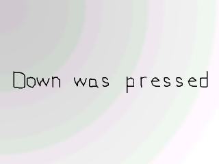
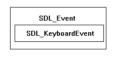

这节课主要介绍如何检测键盘按键动作。这是一个简单的程序，它能显示哪个方向键被按下。前面你已经对SDL_QUIT事件做过简单的事件处理，现在这节课将教你如何检测按键何时被按下以及是哪个键被按下。 //生成信息表面
upMessage = TTF_RenderText_Solid( font, "Up was pressed.", textColor );
downMessage = TTF_RenderText_Solid( font, "Down was pressed.", textColor );
leftMessage = TTF_RenderText_Solid( font, "Left was pressed", textColor );
rightMessage = TTF_RenderText_Solid( font, "Right was pressed", textColor );
所有初始化和加载完成后，我们生成了4个信息表面。
我可能应该在渲染文字时增加错误检测，但是...呃...让我少打点字吧
我可能应该在渲染文字时增加错误检测，但是...呃...让我少打点字吧
//如果有一个事件需要处理
if( SDL_PollEvent( &event ) )
{
//If a key was pressed
if( event.type == SDL_KEYDOWN )
{
现在我们想要检查是否有按键被按下，我们只需检查事件类型
SDL_KEYDOWN。
//选择合适的信息表面
switch( event.key.keysym.sym )
{
case SDLK_UP: message = upMessage; break;
case SDLK_DOWN: message = downMessage; break;
case SDLK_LEFT: message = leftMessage; break;
case SDLK_RIGHT: message = rightMessage; break;
}
}
//如果用户点击了窗口右上角的关闭按钮
else if( event.type == SDL_QUIT )
{
//退出程序
quit = true;
}
}
现在，如果有一个键被按下，我们需要检查是哪个键被按下。
函数
 并且keysym结构体中有一个名为“sym”，类型为
并且keysym结构体中有一个名为“sym”，类型为
如果向上箭头被按下，sym就会是
如果想要了解
另外，我们也检测用户是否点击了窗口右上角的关闭按钮，并且做了相应处理。
函数
SDL_PollEvent() 会将 SDL_KEYDOWN 事件的数据以SDL_KeyboardEvent 的类型保存在SDL_Event事件结构体中，并命名为“key”：

“key”结构体中包含了一个名为keysym的结构体:
SDL_Key 的数据域，它记录了是哪个按键被按下。如果向上箭头被按下，sym就会是
SDLK_UP ，然后我们就让“Up was pressed”的信息显示出来。同样，如果向下箭头被按下，sym就会是SDLK_DOWN ，然后我们就让“Down was pressed”的信息显示出来，等等。如果想要了解
SDL_Key的完整定义，你可以在SDL文档中查询。另外，我们也检测用户是否点击了窗口右上角的关闭按钮，并且做了相应处理。
注意: 有些IDE（比如Code::Blocks）会默认地开启
-Wall信号。 在这种情况下，如果你没有为每个按键键值编写case语句，编译器就会显示警告。你可以通过在switch语句中添加default : ;防止编译器发出警告： //如果有需要显示的信息
if( message != NULL )
{
//将图像应用到窗口中
apply_surface( 0, 0, background, screen );
apply_surface( ( SCREEN_WIDTH - message->w ) / 2, ( SCREEN_HEIGHT - message->h ) / 2, message, screen );
//将message指针置空
message = NULL;
}
//更新窗口
if( SDL_Flip( screen ) == -1 )
{
return 1;
}
当message表面没有指向任何东西时，它会是NULL，此时不会blit任何表面。当message指向某一个表面时，我们会先将background应用到窗口中，然后再将message表面应用到窗口正中央。
让一个表面居中的方法：先将窗口的宽（或高）减去表面的宽（或高），然后，由于当表面居中时，两侧的外边界是相等的，所以你要将剩余的距离除以2，这样就得到了X（或Y轴）的偏移量，于是就能够使此表面居中。
接下来，我们将message重置为空指针，然后更新窗口。
让一个表面居中的方法：先将窗口的宽（或高）减去表面的宽（或高），然后，由于当表面居中时，两侧的外边界是相等的，所以你要将剩余的距离除以2，这样就得到了X（或Y轴）的偏移量，于是就能够使此表面居中。
接下来，我们将message重置为空指针，然后更新窗口。